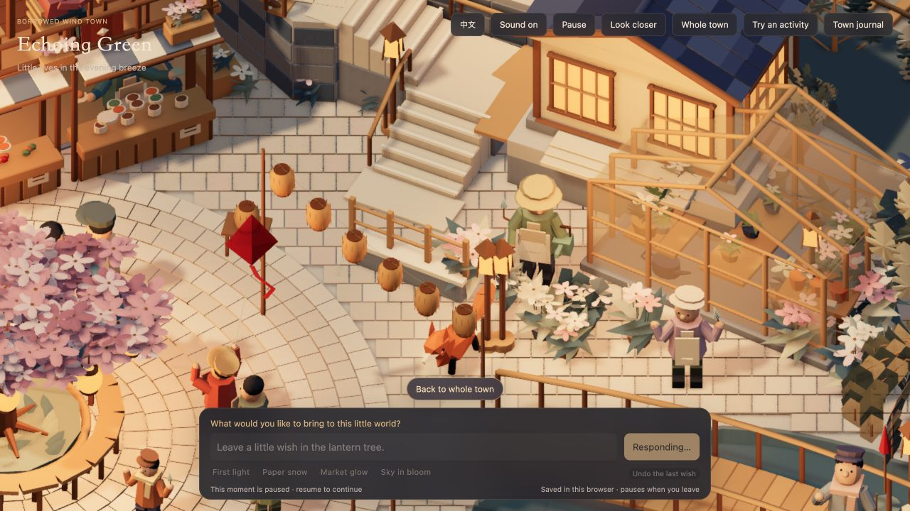
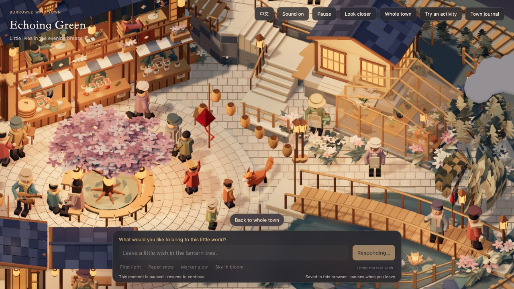
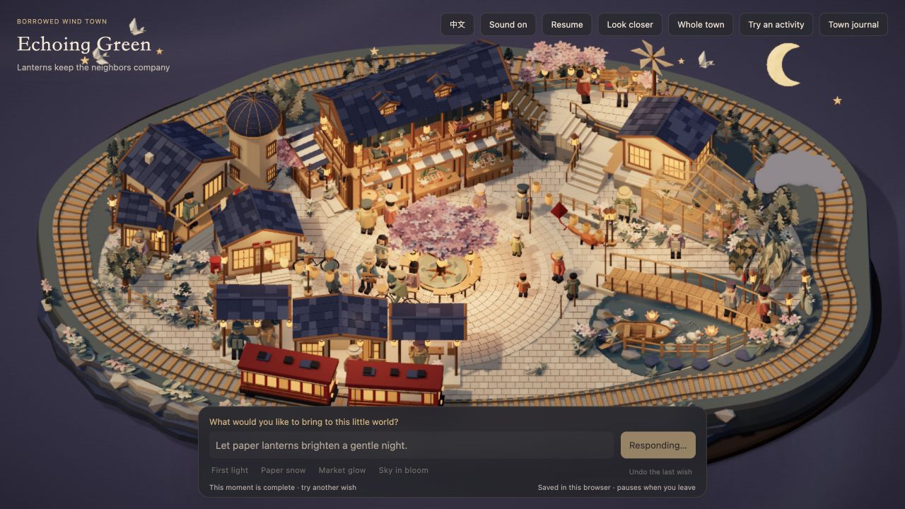
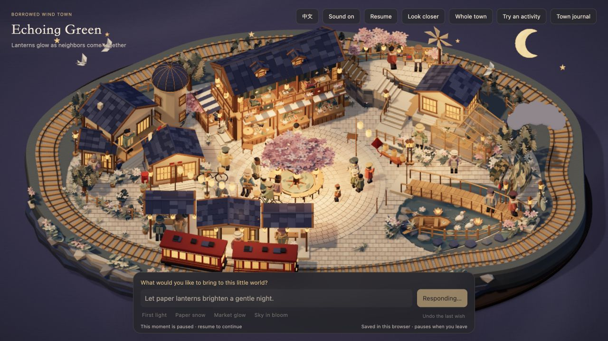
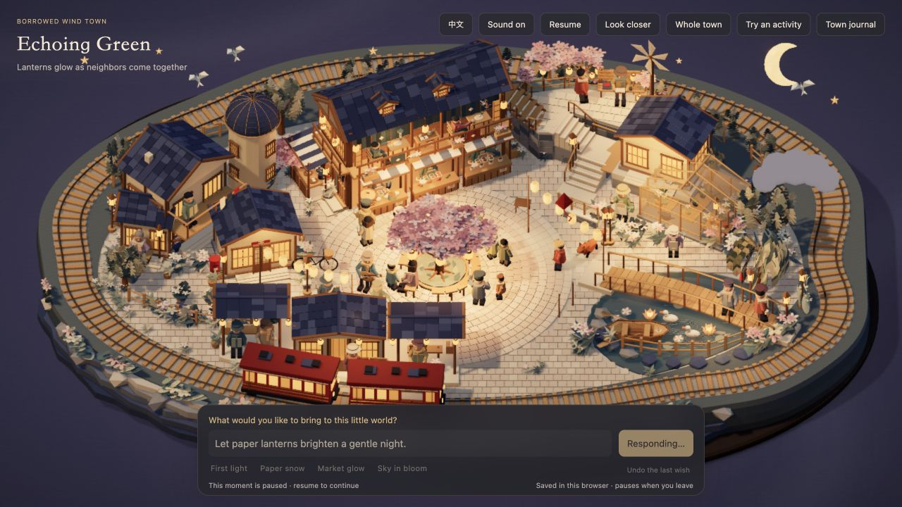

← 回到小镇 · CP47 历史记录CP48 · 狐狸迈步，纸灯慢慢亮
2026-11-05 · 本轮修复“狐狸招呼街坊”时四肢不动、部分连续操作后站着不响应，以及纸灯点亮过快。
上轮检查验证了位置和行为状态，但漏掉了最终四肢姿态被覆盖的问题。本轮补上实际渲染关节与脚掌接触的检查，并重测集市、纸笺、听琴之后的连续操作。下方图片是实际网页取样，没有录制视频；静帧本身不等于完整动作验收。
这次修了什么
- 移动时，四肢由走路步态统一控制；舔爪、伸展和抬爪在站稳后衔接。四肢按实际路程交替，支撑脚贴住真实铺装，避免身体平移而腿不动。
- 新招呼请求可以接过旧的退让、听琴状态。边缘恢复采用实际迈步的后退与弧线转身；前方后半段被挡住时，会先走完可安全移动的部分，再协调附近街坊让路。
- 必要时一位街坊走到附近停步等狐狸；同样复用已有步行路线，不瞬移、不额外召集全镇。明确要求其他人照旧时，不安排这位街坊。互动结束后恢复日常。
- 纸灯每隔约0.85秒开始亮起下一盏，每盏再用约1.1秒柔和增亮，整排约12秒展开。街边暖光同样分阶段增加；收尾时只淡出已经亮起的灯。
实际网页取样
迈步取样 A

四条腿继续参与步态，不受上一段舔爪残余姿态覆盖。
迈步取样 B
同一次互动的另一时刻；现场数据同时核对四肢旋转和脚掌接触。
走近后停下招呼

在附近街坊面前站稳，再抬爪、抬头和摇尾。
约2秒

前面的灯开始发亮，后面的灯保留原有柔和底光。
约7秒

暖光逐盏沿街展开。
约13秒

这一轮纸灯已依次亮起，随后温和收束。
连续状态检查
下表为同一模拟器的受控复测。首移动指狐狸身体位移超过0.01单位的时间；旁边街坊有时会更早作出回应。这些是模拟时间，不是接口延迟或用户设备性能保证。位移幅度以模型单位计。
另补测了更容易卡住的“生活10秒→晚市→狐狸招呼”：实际网页里，狐狸先走出边缘，再完成招呼，约18.4模拟秒结束。此前是完全站住、反复放弃路线；失败记录保留。四肢回归同时覆盖30/60/120Hz显示节奏，核对最终关节姿态和支撑脚。
完整267项应用检查通过，最后的步态、路线与灯光修改另经相关专项检查（包含重复回归，不能相加为独立案例）。新增检查也覆盖一位街坊的临时等待和结束释放、明确不影响他人的要求、纸灯逐盏亮起与收尾。未重新做旧版83条原话的全量模型调用。
沿用原Jev接口、密钥与已批准美术，场景模型、纹理、主相机和背景音乐未替换。狐狸的可走范围复用现有广场与听琴活动的地面；未承诺全世界任意位置都可到达或所有设备的固定帧率。
打开小镇，输入“狐狸招呼街坊” →